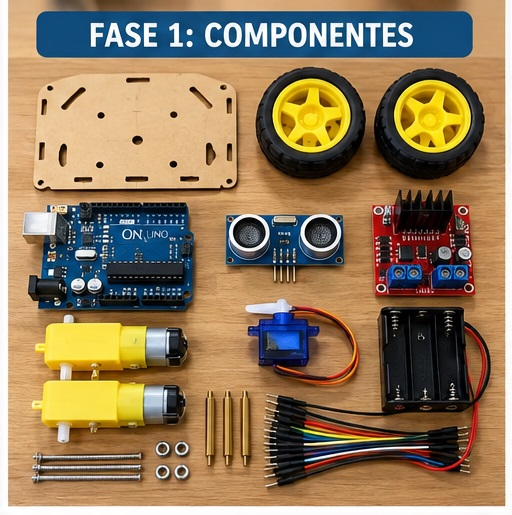
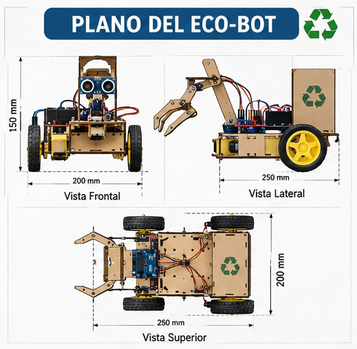

Transformando una barredora manual en un robot de limpieza totalmente autónomo con Arduino
Tomamos una barredora manual de las que se usan en las casas y le agregamos motores, baterías y un "cerebro electrónico" (Arduino). Ahora la barredora puede caminar sola y usar "orejitas invisibles" (sensores de ultrasonido) para esquivar muebles y paredes sin chocar a nadie.
La barredora funciona mediante rodillos y cepillos que giran por fricción cuando las ruedas tocan el suelo, recogiendo polvo y pequeños residuos hacia un compartimento interno.
Al motorizar las ruedas traseras con motores eléctricos y añadir sensores en los 4 lados, el robot recorre las habitaciones y toma decisiones de giro automáticamente.
Desarrollar capacidades técnicas en electricidad, electrónica, soldadura de circuitos y programación de computadoras en C++.
Aprender a organizarse en el taller simulando una pequeña empresa de ingeniería, donde cada alumno cumple una función clave.
Estos son los elementos utilizados por cada grupo de trabajo:

Mesa de trabajo con todos los insumos electrónicos antes del ensamble.
Las baterías van en la zona trasera para dar peso a las ruedas. En el centro van las placas electrónicas protegidas y en los 4 extremos (frente, izquierda, derecha y atrás) se colocan las "orejas" (sensores) para cuidar al robot en todas direcciones.

Así fueron trabajando los alumnos clase a clase durante las 8 semanas de taller:
El programa hace que el robot revise su sensor del frente constante. Si no hay nada a menos de 25 cm, avanza. Si encuentra una pared, se frena, mira a la izquierda y derecha, elige el camino libre y vuelve a avanzar.
// Pines de control de motores
const int IN1 = 5; const int IN2 = 6;
const int IN3 = 9; const int IN4 = 10;
// Pines Sensores Ultrasónicos
const int trigFrente = 2; const int echoFrente = 3;
const int trigDerecha = 4; const int echoDerecha = 7;
const int trigIzquierda = 8; const int echoIzquierda = 11;
const int trigAtras = A0; const int echoAtras = A1;
const int distSeguridad = 25; // cm
void setup() {
pinMode(IN1, OUTPUT); pinMode(IN2, OUTPUT);
pinMode(IN3, OUTPUT); pinMode(IN4, OUTPUT);
pinMode(trigFrente, OUTPUT); pinMode(echoFrente, INPUT);
}
void loop() {
int distFrente = medirDistancia(trigFrente, echoFrente);
if (distFrente > distSeguridad) {
avanzar();
} else {
detener();
// Revisa esquinas y decide hacia dónde girar...
}
}Cada grupo de 4 alumnos organizó las tareas según roles profesionales:
Encargado de perforar, adaptar el chasis, asegurar los motores y nivelar la barredora contra el suelo.
Maneja la protoboard, realiza soldaduras con estaño y verifica que las polaridades no quemen componentes.
Escribe el código en la computadora, sube el programa al Arduino Nano y calibra los tiempos de giro.
Lidera el grupo, verifica el calendario de 8 semanas, documenta en fotos y prueba la pista con obstáculos.
| Etapa | S1 | S2 | S3 | S4 | S5 | S6 | S7 | S8 |
|---|---|---|---|---|---|---|---|---|
| 1. Análisis y Componentes | ██ | ██ | ||||||
| 2. Ensamble Mecánico | ██ | ██ | ||||||
| 3. Electrónica y Soldadura | ██ | ██ | ||||||
| 4. Programación y Pruebas | ██ | ██ |
Puedes descargar el informe técnico completo en formato PDF listo para imprimir:
📥 Descargar Informe Técnico PDF